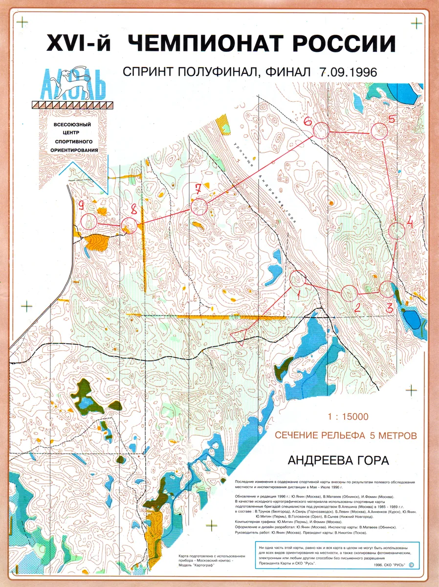
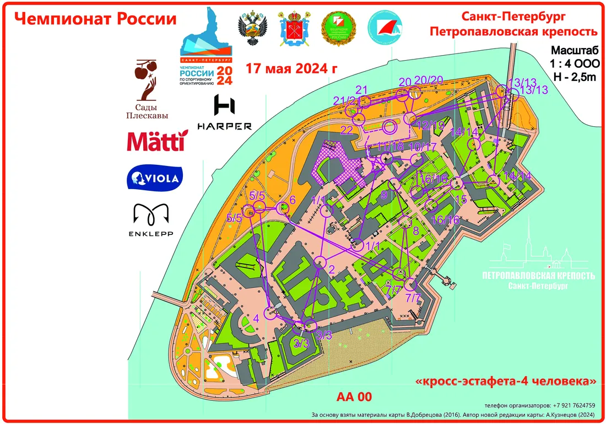
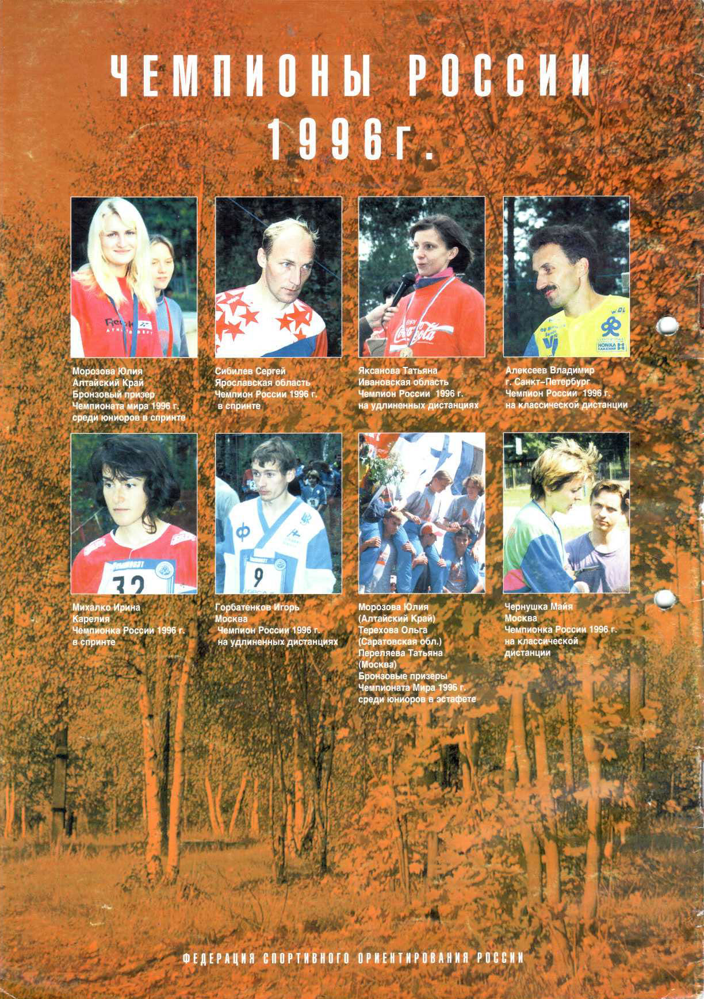
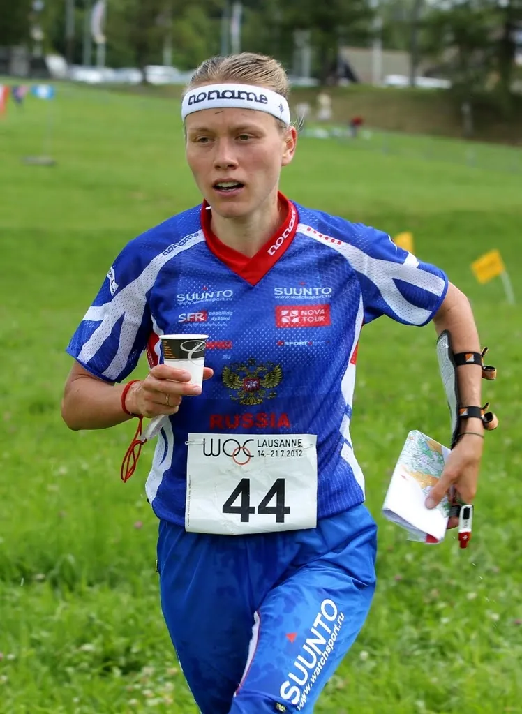
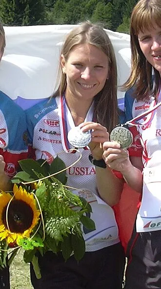
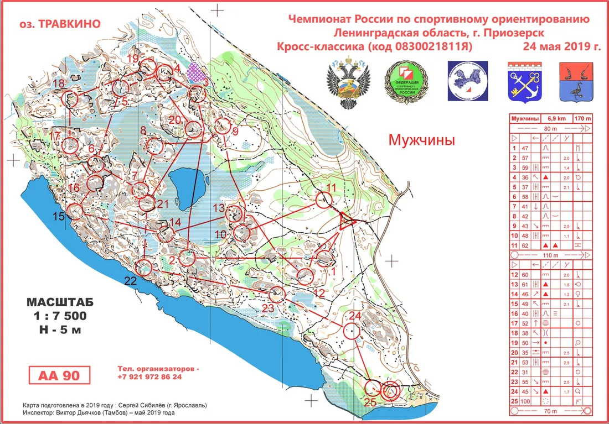
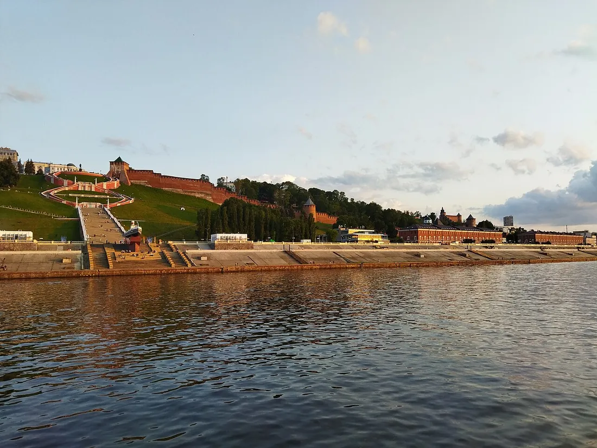

Новая страна, новый чемпионат
От Волгоградской области 1992 года до городского спринта и смешанных эстафет: как менялись дистанции, география и поколения победителей.
- Начало
- 1992, Волгоградская область
- В 1990-х
- классика, спринт, эстафеты
- Поворот
- новые форматы в 2000-х
- В наши дни
- спринт и смешанные эстафеты
- 1992Волгоградская обл
- 1993Сортавала
- 1995Кыштым
- 1996Алоль
- 1997Железноводск
- 1998Геленджик
- 1999Тольятти
- 2000Пермь
- 2001Барнаул
- 2002Пенза
- 2003Пржевальское
- 2004Нижний Новгород
- 2005Миасс
- 2006Волжский
- 2007Томск
- 2008Стерлитамак
- 2009Коса
- 2010Владимирская обл
- 2011Выборг
- 2012Абзаково
- 2013Псков
- 2014Владимир
- 2015Челябинск
- 2016Тверь
- 2017Великий Новгород
- 2018Ворсма
- 2019Кузнечное
- 2020Выборг
- 2021Окуловка
- 2022Владимир
- 2023Вязники
- 2024Санкт-Петербург
- 2025Казань
- 2026Иркутск
Первый чемпионат страны — новая сборная, знакомые леса

Распад СССР изменил не дистанции, а состав соперников: бывшие союзные республики получили собственные сборные и чемпионаты. Первый российский чемпионат по беговому ориентированию открылся 8 августа 1992 года в Волгоградской области. В спринте победили Александр Клочков и Ирина Михалко, в классике — Александр Клочков и Татьяна Яксанова (результаты). Так уже первая российская программа объединила разные требования к скорости и выбору пути.
В последующие годы чемпионат не имел единственного «дома»: он менял леса, рельеф, судейскую команду и формат. В 1993 году в Сортавале соревнования служили отбором на чемпионат мира в США. В финале 5 сентября 1996 года под Псковом спортсмены бежали по карте Аболенье, а 7 сентября на Андреевой горе проходил полуфинал спринта. Архивные карты позволяют увидеть, насколько иначе выглядели тогдашние короткие дистанции.
1993–1996: чемпионат как отбор и вершина сезона

Для начала 1990-х внутренний чемпионат был не только престижным титулом. Например, соревнования в Сортавале в августе 1993 года одновременно служили отбором на чемпионат мира в США. Санкт-Петербург выиграл общекомандный зачёт: в классике Владимир Алексеев стал вторым, Алла Святкина — также второй; в короткой гонке Илья Гусев и Александра Папкова заняли третьи места. В эстафетах мужская команда города была второй, женская — третьей. Так выглядело противостояние региональных школ в момент формирования новой сборной.
В те же годы не было единого шаблона того, что считать главным испытанием сезона. Уже 17 октября 1993 года отдельно проводился чемпионат России на марафонской дистанции, победителем которого стал Игорь Бондаренко. А на финале 1996 года в Псковской области программа включала спринт, классику и удлинённые дистанции. По архивному плакату того года, чемпионами в классике стали Владимир Алексеев и Майя Чернушка, на удлинённой дистанции — Игорь Горбатенков и Татьяна Яксанова. Даже внутри одной эпохи победа в «чемпионате России» могла означать очень разные навигационные задачи.
Как менялась программа
Долгое время ядром оставались классическая дистанция, короткая гонка и эстафета. Позднее добавились спринт, средняя дистанция, общий старт, эстафеты двух спортсменов и смешанные команды. Показателен старт 23 сентября 2004 года в Нижнем Новгороде в необычном формате one-man-relay: выиграл Валентин Новиков. А эстафету 13 сентября 2005 года в Миассе взяла Белгородская область — Роман Ефимов, Роман Ряполов, Валентин Новиков.
Спринт постепенно стал самостоятельной специализацией. На спринте чемпионата среди сильнейших 31 июля 2004 года победили Валентин Новиков и Юлия Новикова; в спринте 9 сентября 2005 года — Валентин Новиков и Татьяна Рябкина. Картина успехов 2000-х показывает значение сильных региональных школ, прежде всего белгородской.
Пенза-2000 и 2002: эксперименты с дистанциями
Термины «классика» и «спринт» далеко не всегда описывают одну и ту же длину или характер дистанции в разные годы. Особенно интересно сравнить гонки, стоявшие рядом в календаре. В Пензе 30 сентября — 1 октября 2000 года разыгрывали сверхкороткую и сверхдлинную дистанции. Сверхкороткую выиграли Павел Наумов и Татьяна Переляева, а сверхдлинную — Роман Ефимов и Александра Войтенко. Разница в требованиях очевидна: в одном случае цена секундной ошибки огромна, в другом к технике ориентирования добавляется длительная физическая работа.
В Пензе 2002 года организаторы собрали 134 мужчины и 80 женщин в личных видах; в программе были one-man-relay, короткая гонка с финалами A и B, классика и эстафеты. Классику выиграли Валентин Новиков и Наталья Наумова. Приведённые в одной карточке варианты дистанций объясняют, как национальные чемпионаты служили площадкой экспериментов до того, как отдельные форматы стали привычными для болельщиков.
От трёхэтапной эстафеты к смешанной четвёрке
Эстафета долго была соревнованием региональных школ: успех определяла не одна звезда, а три сильных этапа подряд. В Миассе в 2005 году мужское золото досталось Белгородской области, а в 2011-м победили воронежцы Павел Заревенко, Максим Сычев и Александр Щербаков. Это разные команды и разные поколения, но одинаково командное испытание на надёжность.

Позже появился формат смешанной эстафеты 2+2. На старте 2 сентября 2011 года победила Новгородская область — Екатерина Попович, Юлия Новикова, Сергей Детков и Андрей Храмов. А 25 сентября 2020 года в Выборге смешанную эстафету выиграл Санкт-Петербург: Дмитрий Поляков, Артём Попов, Олеся Рязанова и Татьяна Бевза. Смена состава гонки изменила и тактику: нужно не только выстроить сильнейших по этапам, но и продумать распределение мужских и женских отрезков.
Герои российской школы

Главные международные имена выросли из плотной конкуренции на внутренних стартах: Валентин и Леонид Новиковы, Андрей Храмов, Татьяна Рябкина, позже Светлана Миронова и другие. В 2005 году Андрей Храмов, выиграв длинную дистанцию в японском Аити, стал первым российским чемпионом мира по ориентированию бегом. При этом золото чемпионата мира нельзя путать с победой в отдельном старте чемпионата России — в карточках календаря результаты приведены раздельно.
Новая эпоха хорошо видна по спринту 9 августа 2025 года в Казани: чемпионами стали Павел Егоров и Анна Дворянская. В спринте 13 мая 2026 года в Иркутске выиграли Алексей Асмолов и Вероника Калинина. За одной вывеской «Чемпионат России» теперь стоят заметно разные поколения и форматы.


Чемпионат как зеркало регионов: от Белгорода до Дальнего Востока
В 2000-е годы особую роль играли Белгородская область, Москва и Санкт-Петербург, но карта российского чемпионата шире этого треугольника. Золото эстафет получали Воронеж, Новгород и другие регионы; сильные индивидуальные спортсмены приходили из Свердловской, Челябинской, Нижегородской областей и с Дальнего Востока. Когда соревнования проходят каждый раз в новом регионе, домашнее знание растительности и стиля карт может стать преимуществом, но не отменяет общего класса ориентирования.
Это хорошо видно по географии календаря: Томск-2007, Стерлитамак-2008, Вязники-2023, Находка-2024. География не служит сама по себе доказательством смены лидеров, но показывает, что чемпионат нельзя свести к одной «столичной» трассе.
Карты, трансляции и память о гонках
Чем ближе к современности, тем больше типов архивных следов оставляет гонка. В календаре чемпионата 24 мая 2019 года в Кузнечном сохранены видеосплиты и видеоматериалы; рядом с бумажными картами и протоколами появились покадровые записи прохождения участков. Там, где прежде спорили о вариантах по памяти, теперь можно сравнивать фактическое движение и время на конкретном перегоне.

Поэтому ссылки внутри статьи ведут не только к итогам. Карточка конкретного дня может содержать карту, результаты, бюллетени, разборы и видеоматериалы. Читателю стоит обращать внимание и на саму смену носителей: от отсканированных протоколов 1980–1990-х до GPS и видеосплитов последних лет. Это история того, как вид спорта учился сохранять собственное прошлое.
От бумажной карточки к электронной отметке: перелом 2001 года
В российском ориентировании 1990-х ещё жили технологии прежней эпохи: контрольные карточки с отверстиями от компостеров, а иногда отметка карандашом или штампом. Для судей это означало ручную проверку посещённых КП, а для спортсмена — необходимость не перепутать окошко карточки. Ошибка могла стоить результата, даже если маршрут был пройден быстро. Карточка чемпионата среди сильнейших в Кузнечном 2001 года содержит характерную оговорку о спорном снятии Валентина Новикова за неправильную отметку; последующее восстановление упоминается там лишь по неофициальным сведениям.

Настоящим поворотом стал чемпионат России в суперспринте и на удлинённых дистанциях 4–5 октября 2001 года в Нижегородском кремле, где, согласно историческому сборнику ФСОР «Ориентирование в регионах», организаторы впервые применили электронную отметку на КП. Эта формулировка в региональной хронике не доказывает первенства среди всех российских соревнований. Комплект оборудования предоставили нижегородцам ориентировщики Вологды. Новая система позволяла после финиша считывать из чипа номера и время посещения пунктов — вместо долгой проверки бумажных проколов. Пример особенно примечателен тем, что эксперимент прошёл на сверхкороткой городской дистанции, где скорость проверки и точность хронометража особенно важны.
В том же 2001 году в Вологде на первом чемпионате Европы по лыжному ориентированию была представлена немецкая система SPORTident. Позднее наряду с ней в России применялась отечественная SFR-system, созданная под руководством петербургского разработчика Александра Курдюмова (впервые применена в 2003 году на «Мемориале Михаила Святкина», серийно выпускается с 2006 года); встречалась также финская EMIT. У SPORTident чип записывает отметки при контакте со станцией (в более новых системах — и бесконтактно), а у EMIT традиционная E-card совмещала электронную запись с механическим дублированием прокола на бумажной вставке.
Электроника изменила не только работу судей. Отметки получили временные метки, из которых складываются сплиты — времена между КП, а зрители получили возможность следить за промежуточными результатами. Кульминацией развития стали бесконтактная отметка и прямой показ прохождения дистанции. Но дата внедрения зависит от региона и организатора: появление оборудования на одном чемпионате не означает, что все старты страны немедленно отказались от компостеров.
Смотреть
Архивные съёмки и записи российских чемпионатов разных десятилетий. Ссылки взяты из карточек соревнований в календаре O-Maps: